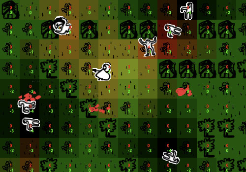

There is an small algorithm implemented on the tummy of this
project:the intelligence of the non-players creatures: zombies
and innocents.
They don't look very smart, do they? :) but I have tried to
offer them a bit of conscience.
The zombies feel attracted for the hero and for the innocents that
run over there. They don't follow you like a compass, instead,
they try to find a valid road to take you.
The innocents feel attracted for you and the feel fear of
the zombies, this is because they use to follow you, but if there
is a zombie near they try to run away from him.
The intelligence doesn’t belong to the zombies nor to the
innocents... actually the intelligence relays on the gound.
You, the zombies and the innocents produces a kind of vibration on
the floor that is propagate after a small distance, it disappears.
This vibration can turn the corners but can not go throw the
houses, and that´s way the innocents and the zombies can feel you on
the other side of a corner of a house, but they can’t feel you, if
is not any corner nearby.
If you press the 'I' key during the game you will be able to see
the vibrations emitted by the creatures.
